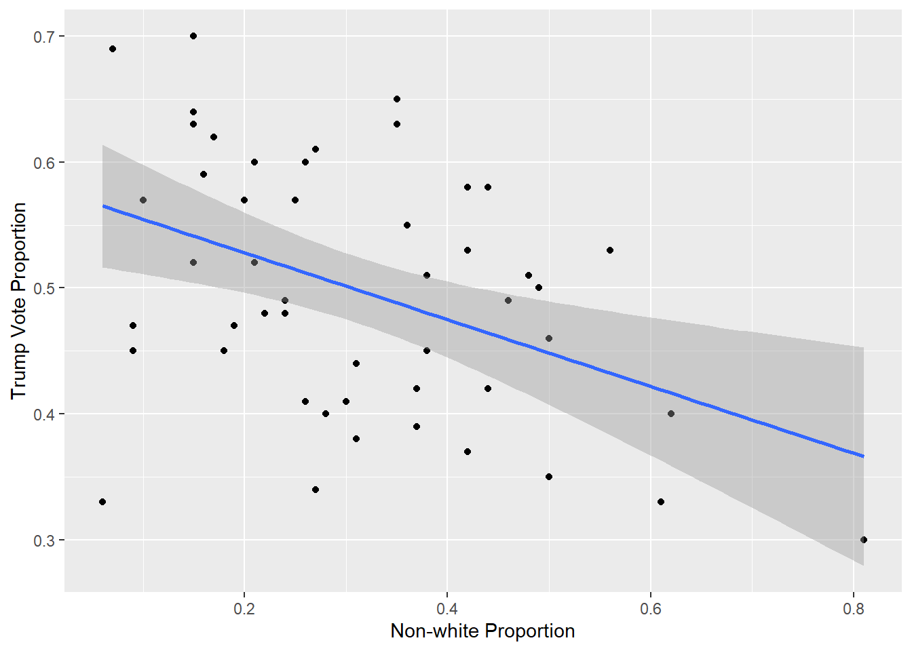

library(tidyverse)
set.seed(44)
data.frame(x=rnorm(30),y=rnorm(30)) |>
ggplot(aes(x=x,y=y))+
geom_point()+
geom_smooth(method = "lm")
In the last couple of notes, we have gone around slapping trendlines onto data and using them to make predictions. We have some metrics which will help us judge between competing models, but sometimes we might see a linear trend even when none exists. For example, I could randomly generate 30 points and get a line with negative slope.
library(tidyverse)
set.seed(44)
data.frame(x=rnorm(30),y=rnorm(30)) |>
ggplot(aes(x=x,y=y))+
geom_point()+
geom_smooth(method = "lm")
The slope is pretty close to 0 which is what it theoretically should be since our model for generating the data above was just
\[Y_i = 0 \times X_i + \varepsilon_i\]
where \(\varepsilon\_i\) is standard normal, but it is still negative and if we didn’t know it was fake data, we might be tempted to conclude that there is a linear dependence between the variables \(x\) and \(y\) even though there really isn’t.
The inferential approach to linear models asks the following question: is the slope I got “significantly” nonzero. In statistics, significance implies that some kind of hypothesis test is at play. Without rehashing all of introductory statistics, I want to briefly explore two key terms that we will use throughout the course:
We’ll do so in the context of finding the slope in an SLM.
The first thing to note is that in order to talk about the standard error of an estimator, we need to think of it as a random variable with a distribution of possible values called its sampling distribution. Its standard error is then the standard deviation of the sampling distribution (yeah its a mouthful, I know). For example, if I replicate the experiment above by choosing 30 random x and y values 1000 times and computing the estimated slope for each replicate, I will get a distribution of slopes we would expect for random data:
set.seed(45)
slopes = replicate(1000, {
x = rnorm(30)
y = rnorm(30)
coef(lm(y ~ x))[2]
})
hist(slopes)
This type of experiment, where we repeatedly calculate a statistic from replicate samples (or resamples), is called a Monte Carlo Simulation. In the example, the output estimates the null1 sampling distribution of the estimator \(\hat \beta_1\) (i.e. the distribution of possible slopes we might get if the true slope was 0). Notice that the mean is close to 0:
mean(slopes)[1] 0.007962432but we get values as large as
max(abs(slopes))[1] 0.6262668in absolute value. An estimate of the standard error is the standard deviation of our simulated slopes.
sd(slopes)[1] 0.1947679A good rule of thumb is that most observations of a random variable fall within 2–3 standard deviations of its mean2 Using this guideline, our simulation suggests that slopes of randomly generated pairs (using the specific normal parameters above) should typically fall in the interval(lower, upper) where:
cat("lower = ",mean(slopes) -2*sd(slopes), ",upper = ", mean(slopes) +2*sd(slopes))lower = -0.3815734 ,upper = 0.3974982If a computed slope falls outside this range, it would be considered unusual and may indicate that the true slope is significantly nonzero. For instance, if I generate data with the same noise but introduce an actual slope of 1, the estimated slope will fall outside this range, confirming its significance.
x = rnorm(30)
y = x+rnorm(30)
model = lm(y ~ x)
coef(model)[2] x
0.9367399 In this case, we would say that the variable \(x\) is a “significant” predictor of \(y\). Its slope matters.
Since we cannot rely on simulations like this for real data3, classical statistics gives us a formula for the standard error of \(\hat \beta_1\)4: \[SE(\hat \beta_1)= \sigma/\sqrt{\sum (x_i-\bar{x})^2}\]
where \(\sigma\) is the standard deviation of the noise. This formula is baked into lm as well5 and can be viewed using summary. Let’s look at the output of this function for the trump.vote vs non.white model:
df_url="https://raw.githubusercontent.com/jmayberr/math133-stat-learning-fall2026/refs/heads/main/Datasets/election2016.csv"
election2016=read.csv(df_url)
fit_lm=lm(trump.vote~non.white,data=election2016)
summary(fit_lm)
Call:
lm(formula = trump.vote ~ non.white, data = election2016)
Residuals:
Min 1Q Median 3Q Max
-0.235205 -0.079041 0.003105 0.072068 0.161777
Coefficients:
Estimate Std. Error t value Pr(>|t|)
(Intercept) 0.58113 0.02862 20.307 < 2e-16 ***
non.white -0.26546 0.08230 -3.226 0.00227 **
---
Signif. codes: 0 '***' 0.001 '**' 0.01 '*' 0.05 '.' 0.1 ' ' 1
Residual standard error: 0.09235 on 48 degrees of freedom
Multiple R-squared: 0.1781, Adjusted R-squared: 0.161
F-statistic: 10.4 on 1 and 48 DF, p-value: 0.002265There’s a lot here and we’ll get to more of it later, but for now look at the Estimate and Std Error columns. The estimate \(-0.2656\) next to non.white is the estimated slope and \(0.08230\) is the corresponding standard error. This means that even though our estimate of the slope is \(-0.2656\), we are only confident in that value being accurate up to 2 or 3 times \(0.08230\). This is often phrased in terms of what we call confidence intervals: a 95% confidence interval is roughly equal to the estimate \(\pm 2\times\)SE6. In our example, the 95% confidence interval would be
cat("CI = (", -0.26546-2*0.08230,",", -0.26546+2*0.08230,")" )CI = ( -0.43006 , -0.10086 )The p-value is the probability of obtaining a slope of magnitude as large as the one obtained from our data ASSUMING the data was randomly generated from normal random variables (like our fake data above). For example, in our fake data, only
sum(abs(slopes)>0.5)/1000[1] 0.008of all our our slopes are as big as \(0.5\) so the p-value of \(0.5\) would be about \(0.008\). Since this number is small, \(0.5\) would be a “significantly nonzero” slope in this scenario. Visually, the p-value is the relative size of the shaded area to the total area shown below:
hist_data = hist(slopes, plot = FALSE)
plot(hist_data,
col = ifelse(abs(hist_data$mids) > 0.5, "steelblue", "lightgray"),
main = "Null Sampling Distribution of Slope",
xlab = "Slope",
border = "white")
text(0.5, max(hist_data$counts) * 0.5, "Area = 0.008", col = "steelblue", cex = 0.9)
On the other hand, if we look at the fraction of slopes greater than \(0.1\) in absolute value, we see that
sum(abs(slopes)>0.1)/1000[1] 0.608of all slopes were greater than \(0.1\) so the p-value of \(0.1\) would be \(0.608\) . This number is pretty high (there’s a 60% change of generating a slope this large by chance) so \(0.1\) is not a significantly nonzero slope.
The smaller the p-value, the more surprising it would be to get a slope as extreme as we observed due to chance, providing more evidence of a significant linear relationship. By convention, a p-value below \(0.05\) is considered statistically significant, below \(0.001\) is considered highly significant, and between \(0.05\) and \(0.1\) is considered moderately significant, though these are guidelines rather than hard rules.
Looking back at the output of the model above, the stated p-value for our slope was \(0.0027< 0.05\) so we can say that non.white is a statistically significant predictor of trump.vote (even though we say in the last notes its a bad predictor) and since the slope is negative, states with a higher proportion of non-white residents tended to have lower Trump vote.
Its important to remember that when talking about statistical significance, there are two types of error one could make
The first is called a Type I error and the second a Type II error. If we look at our experiment from earlier and use a \(2\times\)SE rule for significance, here is how many Type I errors we would make
sum(abs(slopes)>2*sd(slopes))[1] 43That’s an error rate of \(43/1000=0.043\). Using a 2SE rule, the answer will usually be close to \(0.05\). In contrast, if I am testing a situation where the actual slope exists but is small (say 0.1), then I would probably make a Type II error since the estimated slope of
set.seed(44)
x = rnorm(30)
y = 0.1*x+rnorm(30)
model = lm(y ~ x)
coef(model)[2] x
0.005773422 is within 2SE of 0.
The astute observer will have noticed that geom_smooth plots a gray area around a trendline and perhaps questioned why it is has unequal width depending on where we are at on the \(x\)-axis. For example, looking back at the trump.vote model:
election2016 |> ggplot(aes(x=non.white,y=trump.vote))+
geom_point() +
labs(x="Non-white Proportion",y="Trump Vote Proportion")+
geom_smooth(method="lm")
The grey band shows 95% confidence intervals for the predicted mean of \(Y\) at each value of \(x\). Notice that the band is narrowest in the middle of the data and widens toward the edges. This is not a coincidence! The standard error of a predicted mean \(\hat{y}_i = \hat{\beta}_0 + \hat{\beta}_1 x_i\) depends on how far \(x_i\) is from \(\bar{x}\):
\[SE(\hat{y}_i) = \sigma \sqrt{\frac{1}{n} + \frac{(x_i - \bar{x})^2}{\sum (x_j - \bar{x})^2}}\]
When \(x_i\) is close to \(\bar{x}\), the second term under the square root is nearly zero and the SE is small. As \(x_i\) moves further from \(\bar{x}\) in either direction, the SE grows, reflecting the fact that we are extrapolating further from where most of our data lives. Intuitively, our estimates of \(\hat{\beta}_0\) and \(\hat{\beta}_1\) each carry their own uncertainty, and that uncertainty compounds as we move away from the center of the data.
One can get such confidence intervals using the predict function. Here are the first six in our Beerwings model. The “fit” term gives the estimate \(\hat{y}\) for the corresponding \(x\) in our data while “lwr” and “upr” give the endpoints for a 95% confidence interval of our estimate:
head(predict(fit_lm,interval = "confidence")) fit lwr upr
1 0.4882225 0.4611187 0.5153264
2 0.4696406 0.4376342 0.5016471
3 0.4510588 0.4112776 0.4908399
4 0.5121135 0.4846125 0.5396145
5 0.4192041 0.3629583 0.4754500
6 0.4988407 0.4725825 0.5250990There is a further level of complexity that I hesitate to mention, but we have already gotten deep into the rabbit hole so here we go. There are also something called prediction intervals:
head(predict(fit_lm,interval = "prediction")) fit lwr upr
1 0.4882225 0.3005821 0.6758629
2 0.4696406 0.2812296 0.6580517
3 0.4510588 0.2611724 0.6409451
4 0.5121135 0.3244153 0.6998117
5 0.4192041 0.2251993 0.6132090
6 0.4988407 0.3113206 0.6863608The prediction intervals try to take into account the variance of the noise as well and as such, they are always wider than the confidence intervals. Here is a comparison of the interpretations of confidence vs prediction intervals for the first observation in our dataset (Alabama) which had a non-white proportion of
election2016$non.white[1][1] 0.35To summarize the difference:
Confidence interval for the mean at \(x_i\): how uncertain are we about the average value of \(Y\) at this \(x_i\)? This only accounts for uncertainty in estimating the line.
Prediction interval at \(x_i\): how uncertain are we about a single new observation \(Y\) at this \(x_i\)? This accounts for uncertainty in estimating the line *plus* the irreducible noise \(\sigma\) of any individual observation.
Import the dataset Beerwings.csv (Source: Mathematical Statistics with Resampling and R) and complete the following steps. Note that Beer measures beer consumed in ounces and Hotwings measures number of hotwings consumed per individual.
If time permits, review the previous notes as well by completing the following
This term comes from hypothesis testing where the null hypothesis is that the true slope between \(x\) and \(Y\) in our model is \(\beta_1=0\).↩︎
For a normal distribution, about 95% of all observavtions are within 2 SD of the mean and 99.7% are within 3. Chebyshev’s inequality gives a general distribution bound of 75% and 89%, respectively.↩︎
Although we will see later that there are techniques like bootstrapping that allow us to “cheat” a little and do just that.↩︎
See supplement below for details.↩︎
Although since \(\sigma\) is generally unknown, it uses the estimate \(\sqrt{SSE/(n-2)}\) which is based on an unbiased estimator of \(\sigma\) - take Math 132 if you want to learn more about that.↩︎
Although this approximation is not great for small sample sizes.↩︎